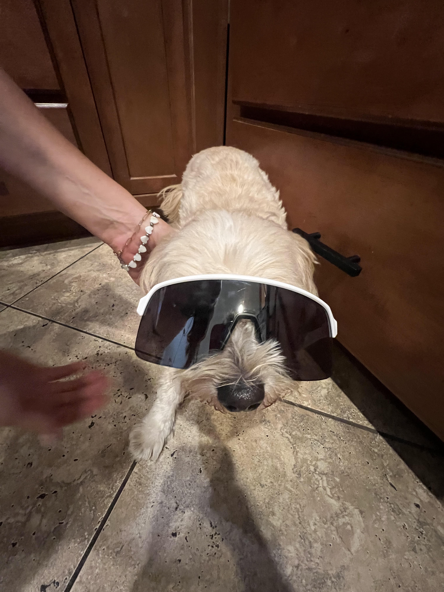

About PetVitals

Just like people track their steps, calories, and weight, PetVitals helps owners do the same for their dogs and cats. Log your pet's weight, meals, and calories each day, and watch their health trends over time.
Features
- Secure login so only you see your pets' data
- Track weight, meals, and calories for each pet
- Breed info showing a healthy weight range
- History table and weight trend chart
- Live activity feed from other PetVitals users